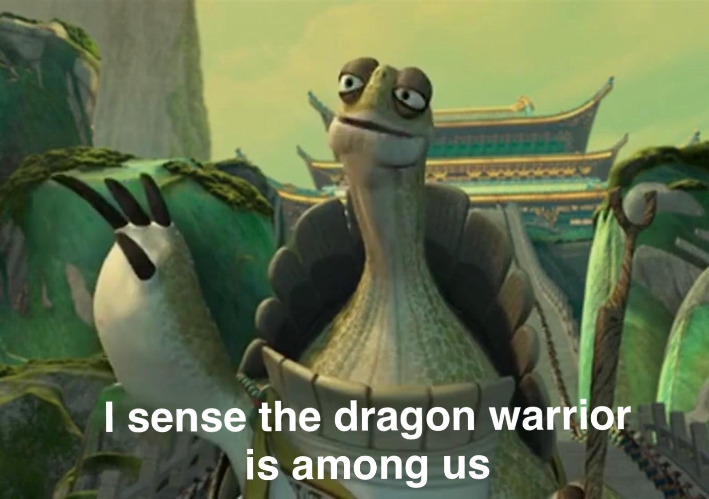
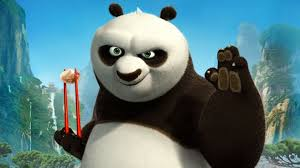

Eric's Kung Fu Panda Review
The Directors of Kung Fu Panda are Mark Osborne and John Stevenson, the lead actors are Jack Black as Po, Dustin Hoffman as Master Shifu, Angelina Jolie as Tigress, Jackie Chan as Monkey, Lucy Liu as Viper, Seth Rogen as Mantis, James Hong as Mr. Ping, David Cross as Crane, Randall Duk Kim as Oogway, Bryan Cranston as Li, Mick Wingert as Farmer Rabbit, and finally Ian McShane as Tai Lung.
Kung Fu Panda is the story of a lazy panda named Po, voiced by Jack Black, who becomes a master of martial arts and saves his village from Tai Lung, voiced by Ian McShane. Po being the fat and lazy panda he is can barely climb the steps of the temple that rests on a mountain overlooking his village. However, he does make it to the top with his adoptive father’s noodle cart. His goal is to sell the noodles to the villagers who came to witness the choosing of the dragon warrior. The five contenders for the title are Monkey (Jackie Chan), Tigress (Angelina Jolie), Mantis (Seth Rogen), Viper (Lucy Liu), and Crane (David Cross). Shockingly Temple Master Oogway chooses Po who wasn't even participating over the 5 worthy contenders.

Po now must train to save his village so he practices under master Shifu(Dustin Hoffman)with the warriors who had hoped to be the dragon warrior. Po battles the evil Tai Lung and emerges victorious via the use of a secret technique. He saves the village and everyone is safe. Po is the hero of the village and is praised by all for his heroics.

The story is very predictable and the final battle is somewhat anti-climatic. The best character is master Oogway who sadly DIES. Kung Fu Panda is a light-hearted Action/Comedy adventure perfect for young kids and families, Jack Black won the kid’s choice award for the best-animated voice for his role in this movie. Overall I rate this movie 4.5 stars out of 5. If the movie had more creative fight scenes it could easily be bumped up to 5 stars. However, the comedy is childish but can still be enjoyed by adults which keeps it at 4.5 stars
If you looking for more reviews or info on the movie here is the IMDB page for Kung Fu Panda
Kung Fu Panda IMBD